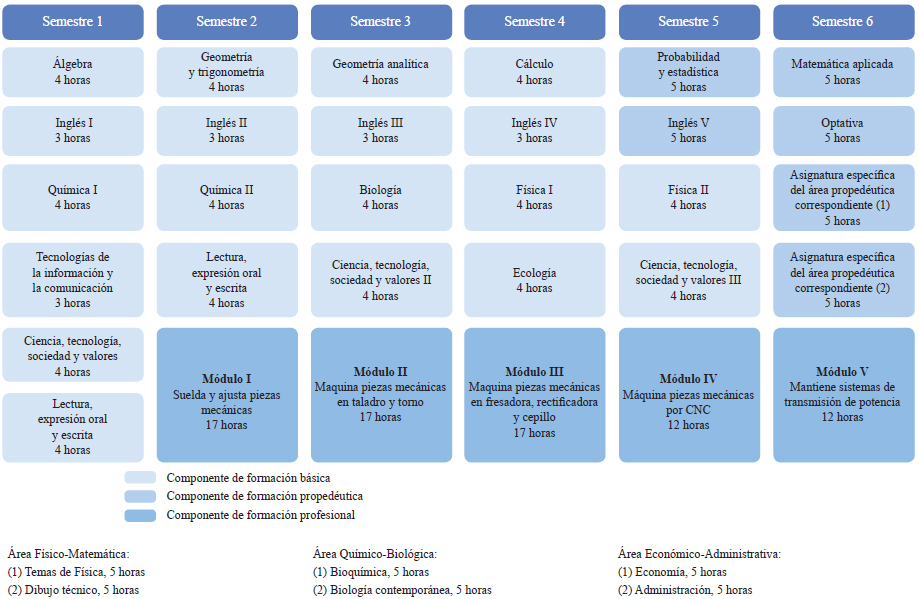
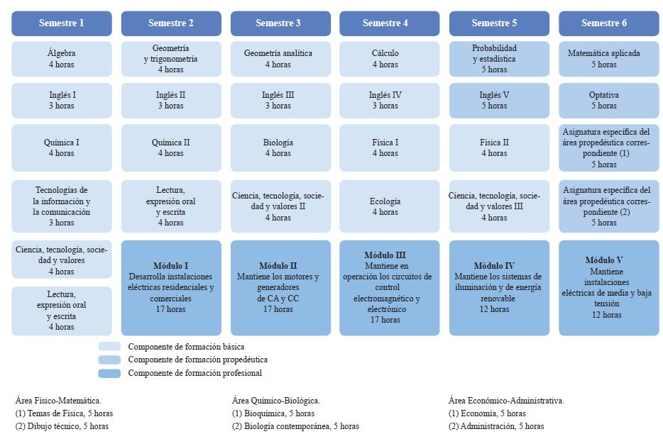
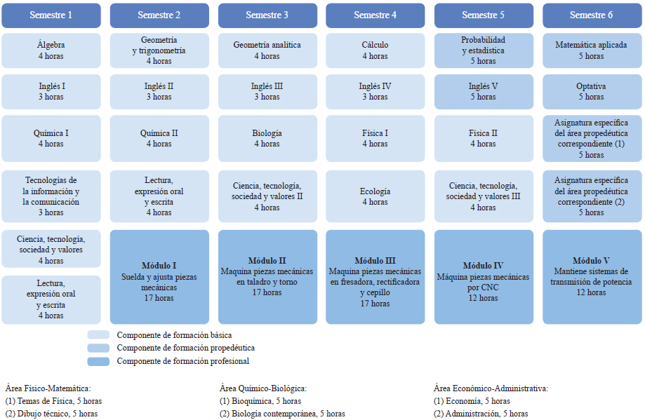
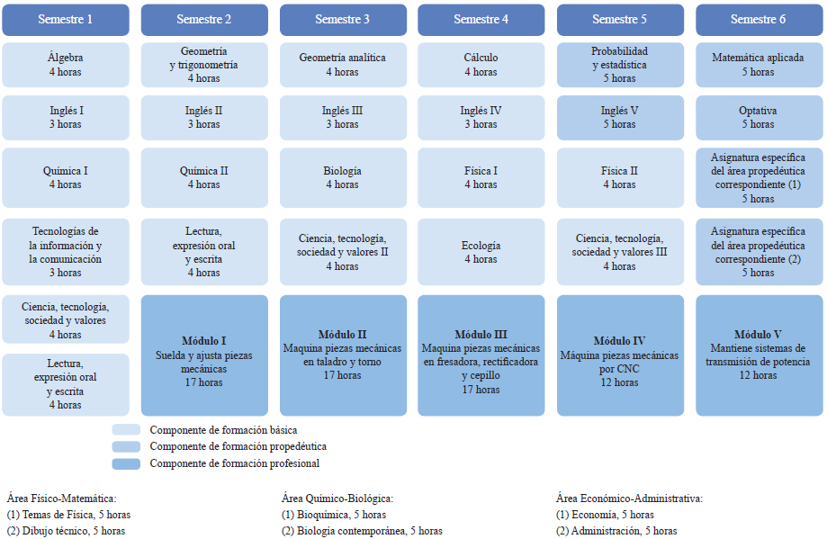
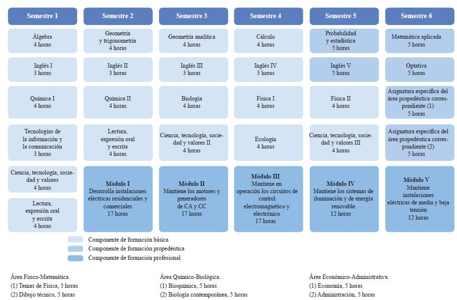
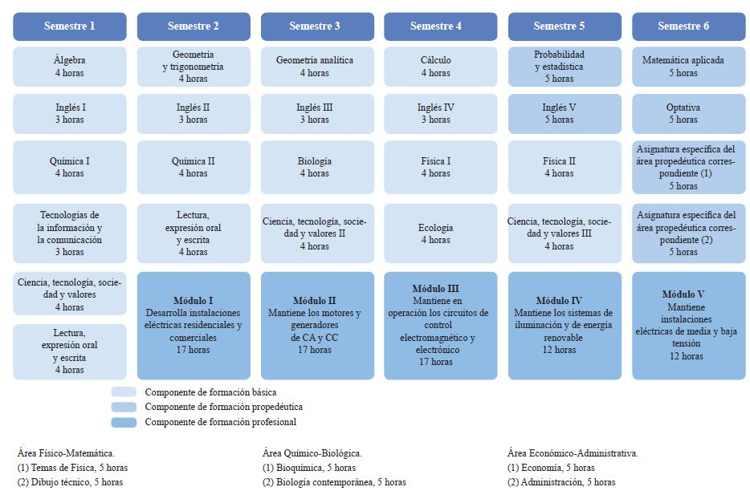

PAOLA CONSTANZA ELGUEA PEREZ
PROGRAMACION
RECURSAMIENTO 2017
elguea61@gmail.com
FUNCIONALIDAD
VISUALIZAR INFORMACION SOBRE LAS CARRERAS TECNICAS CON LAS QUE CUENTA CBTis
LIC.JOSE ANTONIO GOMEZ HERNANDEZ
TÉCNICO EN PROGRAMACIÓN
Persona con conocimientos, habilidades y actitudes, capaz de ingresar a empresas de desarrollo de software, diseño gráfico, mantenimiento, outsourcing.
COMPETENCIAS PROFESIONALES
PERFIL DE EGRESO
La formación que ofrece la carrera de Técnico en programación permite al egresado, a través de la articulación de saberes de diversos campos, realizar actividades dirigidas a la:
Instalación y desarrollo de software de aplicación utilizando programación estructurada y orientada a objetos en ambientes web y móviles, con almacenamiento persistente de datos.
Así como la configuración y administración de plataforma e-learning y Comercio electrónico.
OPORTUNIDADES DE INSERCIÓN LABORAL.
Desarrolladores de software
Analistas de sistemas
Analista de programas de cómputo
Programador de sistemas de cómputo
Edición de software y edición de software integrada con la reproducción
Escuelas de computación del sector privado
Servicios de diseño de sistemas de cómputo y servicios relacionados
Escuelas de computación del sector público
TÉCNICO EN MECÁNICA INDUSTRIAL
Profesionista que da mantenimiento a los sistemas de transmisión de potencia utilizando las máquinas herramientas convencionales, de control numérico, máquinas de soldar con arco eléctrico y oxigas auxiliándose de los procesos de ajuste de piezas mecánicas.
COMPETENCIAS PROFESIONALES

PERFIL DE EGRESO
Durante el proceso de formación de los cinco módulos, el estudiante desarrollará o reforzará las siguientes competencias profesionales, correspondientes al Técnico en Mecánica Industrial:
Suelda y ajusta piezas mecánicas.
Maquina piezas mecánicas en talador y torno.
Maquina piezas mecánicas en fresadora, rectificadora y cepillo.
Maquina piezas mecánicas por CNC.
Mantiene sistemas de transmisión de potencia.
OPORTUNIDADES DE INSERCIÓN LABORAL.
Industrias de transformación y procesos como: Textiles, del plástico, petroleras, metalmecánica, automotriz, pesqueras, mineras, siderúrgicas, agrícolas, alimenticia, química, de muebles, forestal, papelera, gráfica y en general todo tipo de industria de la producción y manufacturera que utilice maquinaria entre otras.
TÉCNICO EN ELECTRICIDAD
La carrera de Técnico en Electricidad permite al estudiante sustentar la demanda de ocupación de Técnicos Electricistas en el sector productivo y de servicios, capaz de diseñar y realizar instalaciones eléctricas residenciales y comerciales, así como proporcionar mantenimiento a máquinas eléctricas.
COMPETENCIAS PROFESIONALES

PERFIL DE EGRESO
Durante el proceso de formación de los cinco módulos, el estudiante desarrollará o reforzará las siguientes competencias profesionales, correspondientes al Técnico en Electricidad.
Desarrolla instalaciones eléctricas residenciales y comerciales.
Mantiene los motores y generadores de CA y CC.
Mantiene en operación los circuitos de control electromagnético y electrónico.
Mantiene los sistemas de iluminación y de energía renovable.
Mantiene instalaciones eléctricas de media y baja tensión.
OPORTUNIDADES DE INSERCIÓN LABORAL.
Todas estas competencias posibilitan al egresado su incorporación al mundo laboral o desarrollar procesos productivos independientes, de acuerdo con sus intereses profesionales o las necesidades en su entorno social.
TÉCNICO EN LOGISTICA
Ofrece las competencias profesionales que permiten al estudiante realizar actividades dirigidas a la administración de bienes, planificando los suministros destinados al almacenamiento de manera manual y electrónica, la organización de los nodos logísticos para el transporte de mercancías, así como proveer los servicios y atención al cliente sobre los movimientos y los costos de la cadena logística.
COMPETENCIAS PROFESIONALES
PERFIL DE EGRESO
Durante el proceso de formación de los cinco módulos, el estudiante desarrollara o reforzará las siguientes competencias profesionales:
Supervisa el proceso de suministrio de bienes.
Apoya el proceso de administración al servicio de almacenaje de bienes.
Organiza el transporte de mercancías.
Proveve servicio de atencion al cliente sbre los movimientos de logistica. Organiza los costos de la cadena logística y de las competencias de productividad y empleabilidad:
Atencion al proceso
Planeación y organización
Ética profesional
Comunicación efectiva
Trabajo en equipo
Atención al cliente
Relaciones interpersonales
OPORTUNIDADES DE INSERCIÓN LABORAL
Nuestro país presenta una amplia diversidad de procesos de producción, desde los que utilizan tecnología moderna, hasta sistemas tradicionales; este hecho contribuye a diversificar las ocupaciones, los Comités interinstitucionales de Formación Profesional decidieron utilizar los siguientes: Sectores industriales, comerciales y de servicios, públicos o privados: Escuelas, constructoras, fábricas, centros comerciales, hospitales, inmobiliarias, hoteles, instituciones de crédito, despachos contables y tiendas de autoservicio. Autoempleo


 
PERFIL DE EGRESO

PERFIL DE EGRESO 
PERFIL DE EGRESO

PERFIL DE EGRESO
 PERFIL DE EGRESO
PERFIL DE EGRESO


 2
2 3
3 4
4 5
5 1
1 5
5

 1
1 4
4